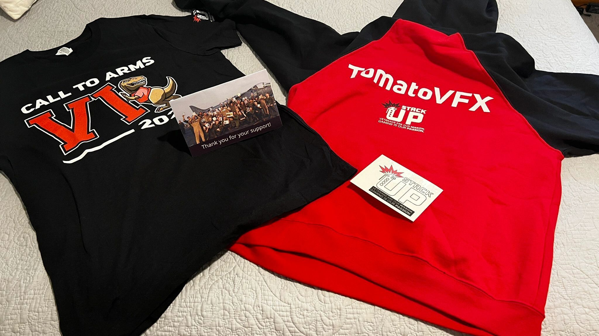

100+
Members spanning Southern California, the United States, and beyond.
Project Code Red brings together casual and competitive gamers, creators, volunteers, and community leaders to turn online energy into offline impact. The organization exists to prove that gaming can be a source of service, encouragement, education, and opportunity.

Project Code Red uses gaming as a force for service, education, positivity, and opportunity.
Project Code Red Inc was created to make a difference for a single person, a neighborhood, or an entire community. The organization was founded on the belief that a large group of dedicated people can create meaningful change.
The mission also reaches beyond gaming itself. Project Code Red aims to provide underserved communities with greater access to the internet and technology so people can connect, learn, and thrive in a digital world.
The core vision is to be the go-to home for gamers worldwide who care about what happens inside and outside the gaming community.
Project Code Red uses esports, content, volunteering, education, and leadership to channel community energy into something constructive.
The acronym anchors the culture and gives the community a clear shared standard.
Members support holiday meal distribution, beach cleanups, in-person service initiatives, and volunteer opportunities that reach thousands of people.
Streamer raids and community visibility help small creators build momentum on Twitch and other platforms.
Campaigns have supported StackUp, St. Jude, the American Red Cross, and other organizations serving real needs.
Prime Formula Tutoring, SiNET Tutoring, and financial education resources expand the impact beyond gameplay.
Project Code Red has earned meaningful certifications and partner recognition that reinforce the work.


